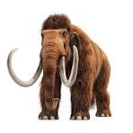

El mamut lanudo, una de las especies más emblemáticas de la prehistoria, vivió en las épocas glaciares y se extinguió hace unos 4,000 años.
Descripción del Mamut Lanudo

Extinto: Hace aproximadamente 4,000 años.
Causa: Cambio climático y caza por parte de humanos prehistóricos.
El mamut lanudo era una especie de mamífero de la familia de los elefantes, adaptado al clima frío de la era glacial. Sus impresionantes colmillos podían medir hasta 4 metros y sus cuerpos estaban cubiertos por un denso pelaje.
El mamut lanudo habitaba en grandes manadas en las regiones de Eurasia y América del Norte. Se cree que su extinción estuvo relacionada tanto con el cambio climático que redujo su hábitat como con la caza intensa por parte de los humanos prehistóricos.
¿Cómo vivía el Mamut Lanudo?
El mamut lanudo vivió en un ambiente frío y cubierto de nieve, adaptándose a las bajas temperaturas con un pelaje grueso que lo protegía del frío extremo. Además de los colmillos, su gruesa capa de pelo y una capa de grasa bajo la piel le permitían sobrevivir en los climas helados.
Estas criaturas eran herbívoras, alimentándose principalmente de hierba, plantas y arbustos. Como otros animales de la época, los mamuts jugaban un papel crucial en el ecosistema, ayudando a mantener el equilibrio de la vegetación.
Últimos Mamuts
Los últimos mamuts lanudos sobrevivieron en la isla Wrangel, en el Ártico, hasta aproximadamente el año 1650 a.C., mucho después de que la mayoría de su especie se extinguiera en el continente.
Estos mamuts fueron capaces de sobrevivir en condiciones aisladas durante miles de años, lo que los convierte en un ejemplo fascinante de cómo algunas especies pueden adaptarse y sobrevivir en condiciones extremas durante más tiempo del esperado.